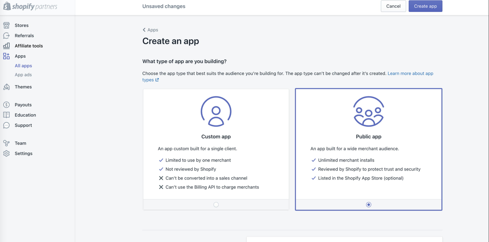
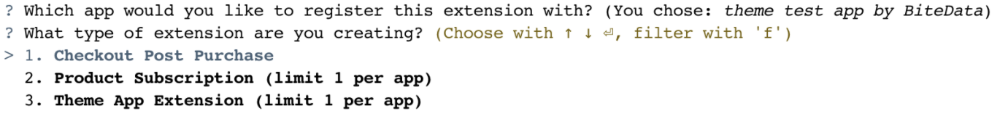
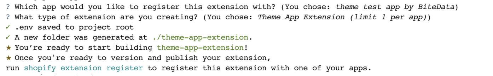
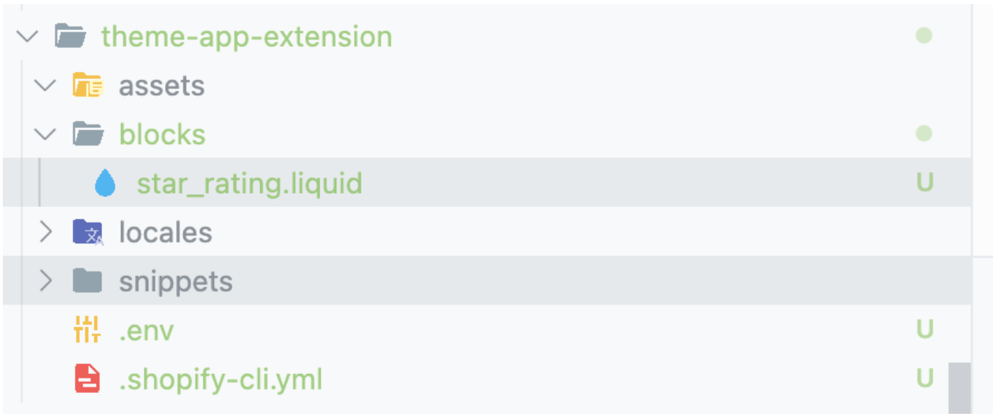
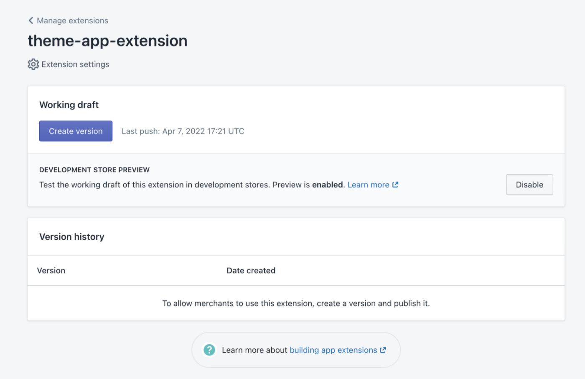
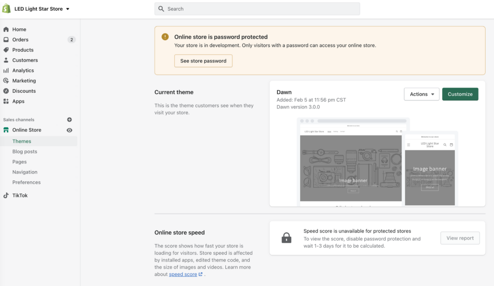
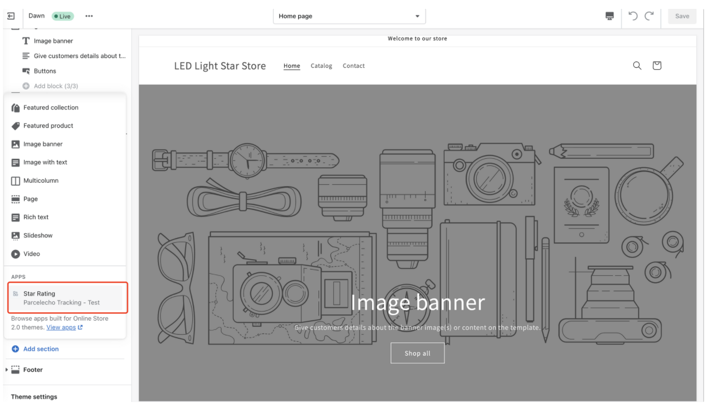

什么是 theme extensions？
简单的来说，就是以前如果需要在主题中添加模块，就需要修改主题的代码，这样就导致主题的代码和第三方 app 的代码混在了一起，当 app 卸载时，代码还遗留在主题中。使用起来不友好，时久了网站也是越来越慢。
而 Shopify Theme extension ，主要是方便第三方开者，向 theme 中插入代码的工具。卸载 app 后 theme extension 会自动移除。
如何创建一个 Shopify extension
首先，你需要安装 Shopify cli, 安装方法可以参考 https://shopify.dev/apps/tools/cli/installation
先确认一下版本
1 | shopify version |
登陆你的 shopify partner 账户
1 | shopify login |
创建一个 app

创建一个 theme extension
1 | shopify extension create |
选择你刚刚创建的 app

选择第三项，创建成功

创建一个测试的 block， 在 blocks 目录下创建一下 名为 star_rating.liquid 的目录

输入如下代码：
1 | Hello,world |
使用命令将 extension 发布到 shopify 店铺
1 | shopify extension push |
命令行中可以获取开启主题的连接

开启后，就可以在编辑主题中添加这个模块去任意地方

你会发现，Apps 有你创建的组件。

添加后，模块就会出现在你想要的地方